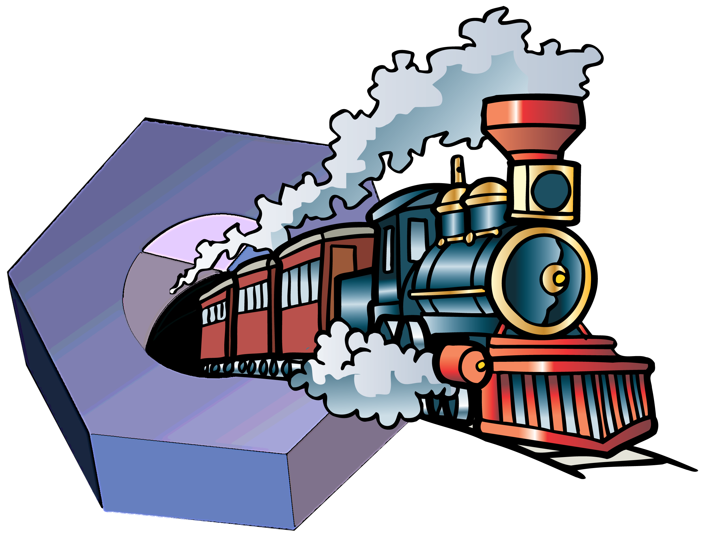
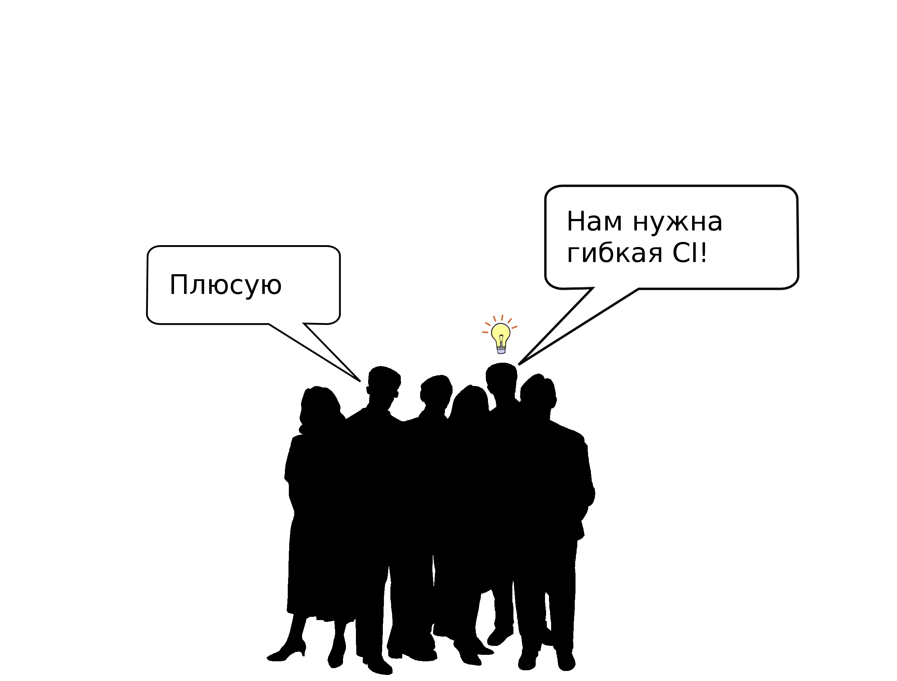
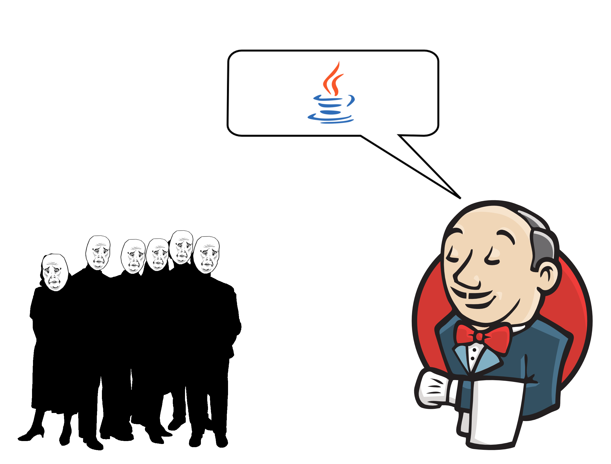
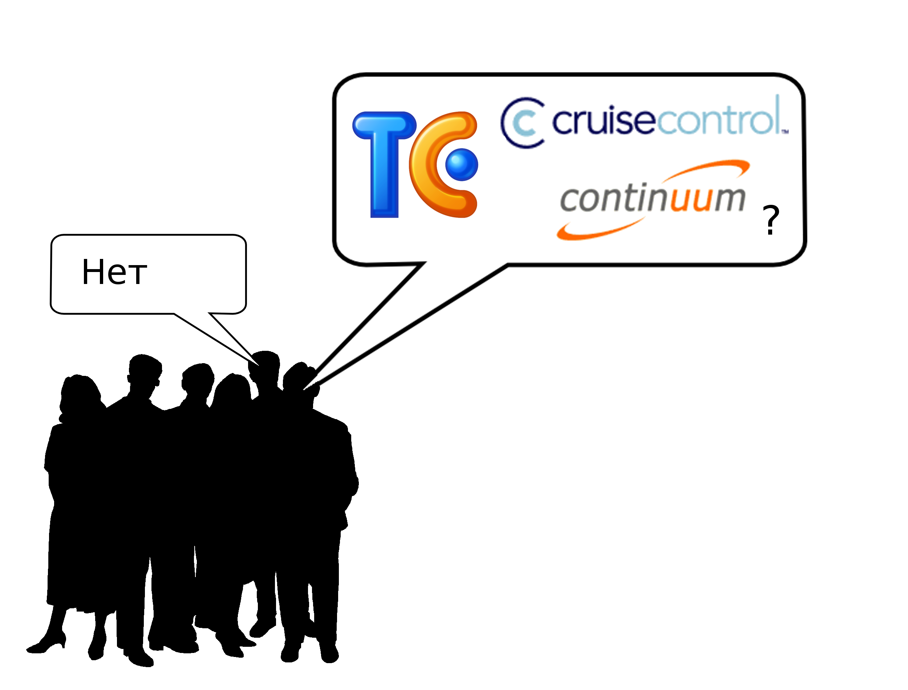
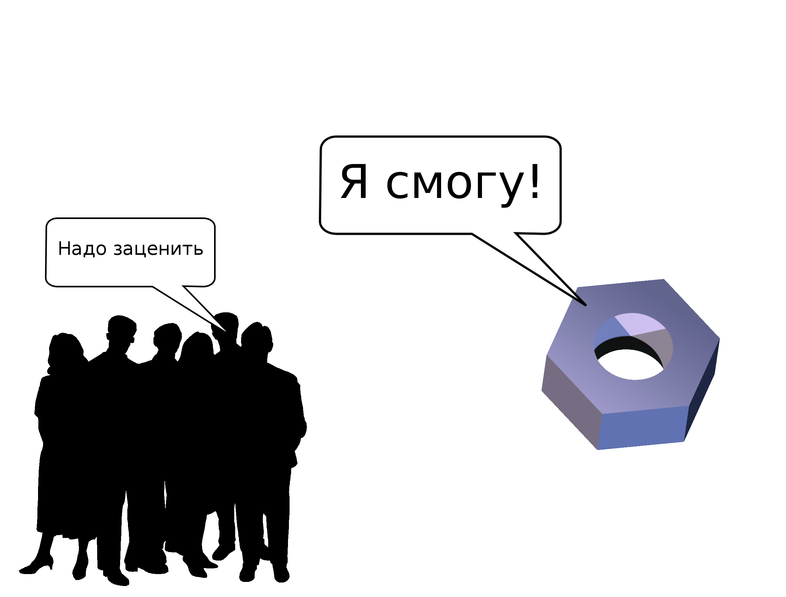
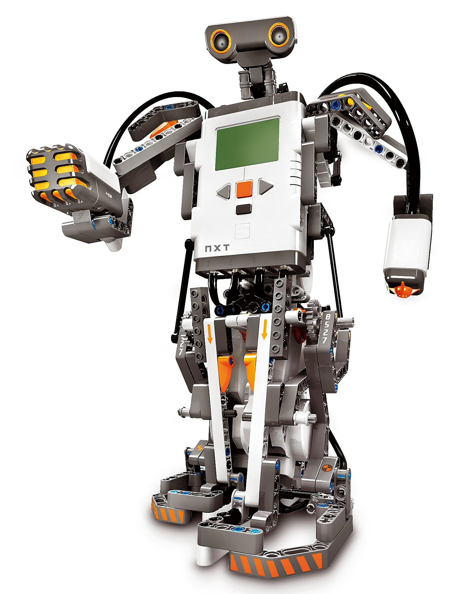

Buildbot — паровозик, который смог

Сказка




Что есть buildbot?
Концепция фраемворка
бери только то, что нужно
проще расширять
Конфиг на python
модульность
git (версионирование)
code review
Tips and Tricks

Только через мой git!
Прощай, копипаста!
Конец